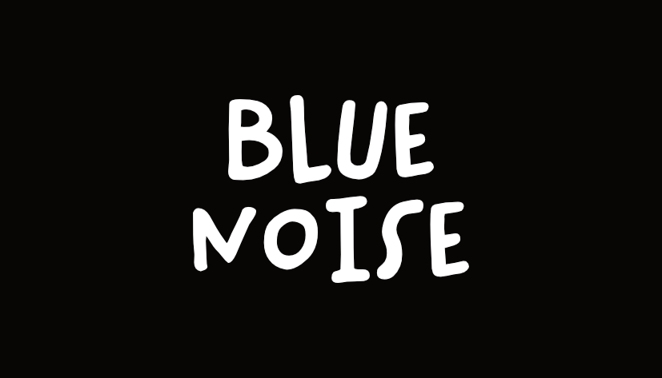

Project Webpage: https://simonweckert.com/bluenoise.html
Blue Noise is a critical intervention and artistic exploration that takes the form of a Bluetooth jammer. It engages with the increasing tendency in modern society to isolate ourselves from the acoustic environment through wireless, ever-smaller headphones and audio devices. As headphones shrink and cables disappear, our ability—and willingness—to participate in shared auditory space diminishes.

Choose your hardware